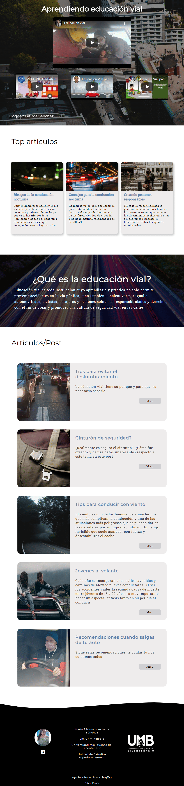
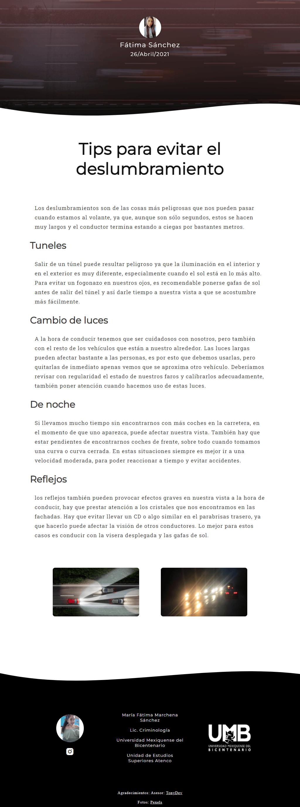

Blog sobre educación vial / Desarrollador Web
Duración
Junio 2022 - Enero 2024
Tecnologías usadas
Angular, HTML, CSS, BOOTSTRAP, Firebase Realtime Database, Firebase Hosting, JSON.
Team
Descripción general del puesto
En conjunto con UMB plantel Atenco, se desarrolló un blog para el municipio de Texcoco. Siguiendo un patrón de diseño conservando la calidad del contenido, el antiguo sitio no tenía un diseño responsivo esto se adaptó logrando más vistas.
Entregables
 